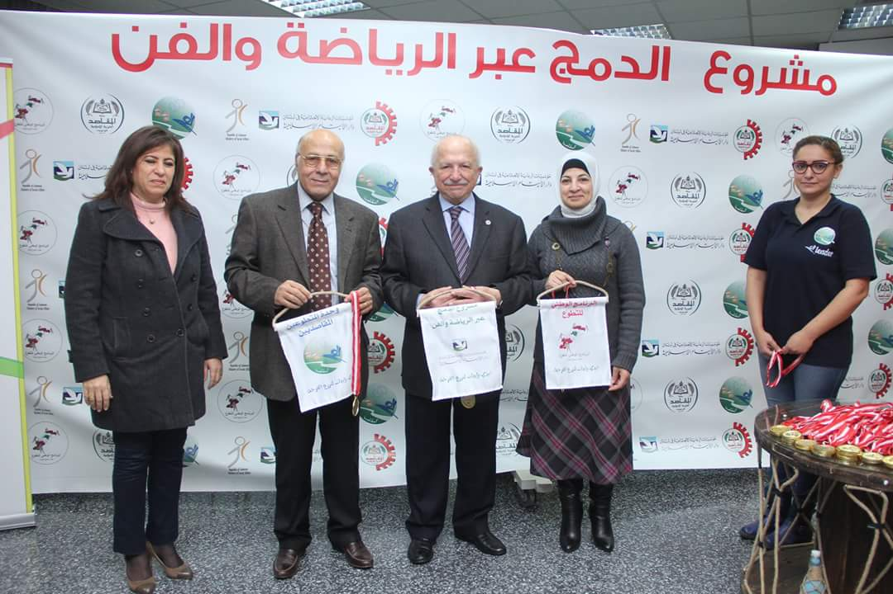
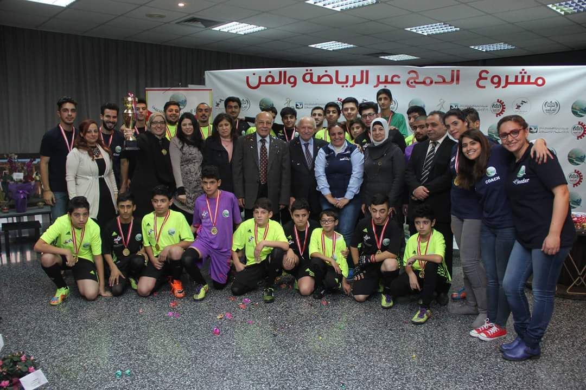
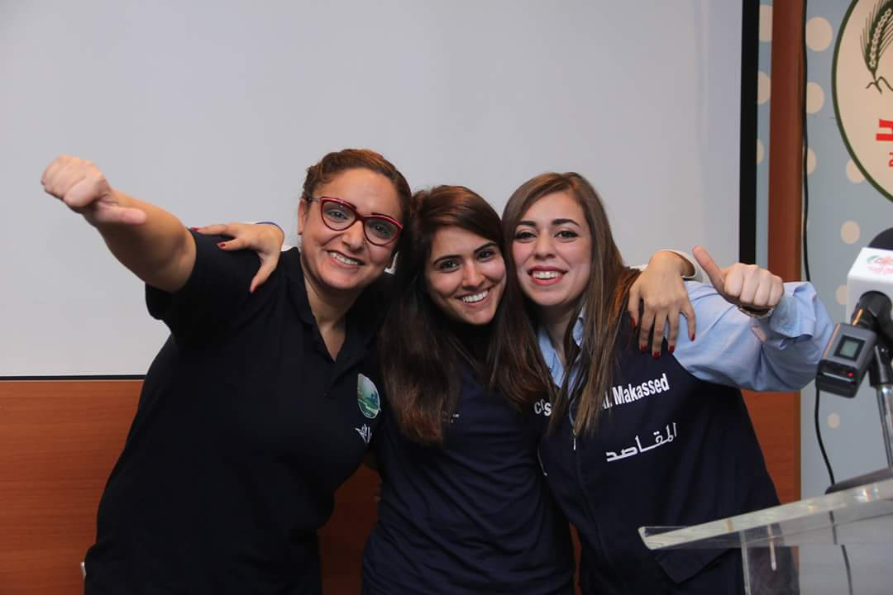
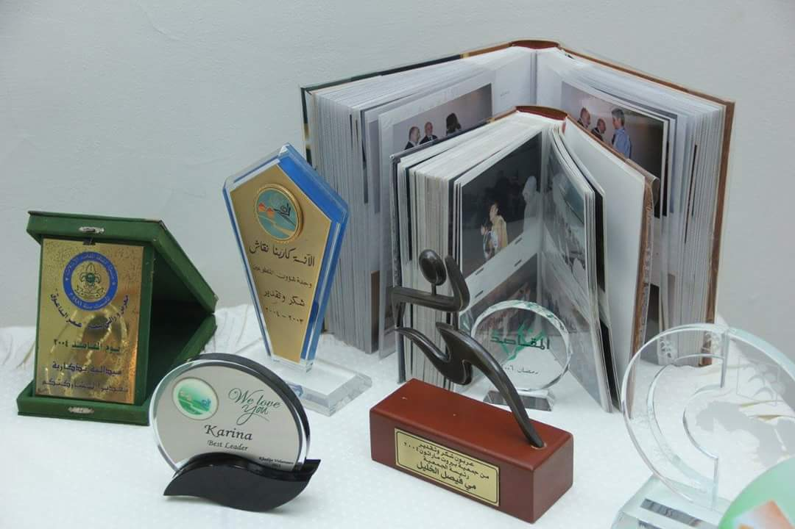
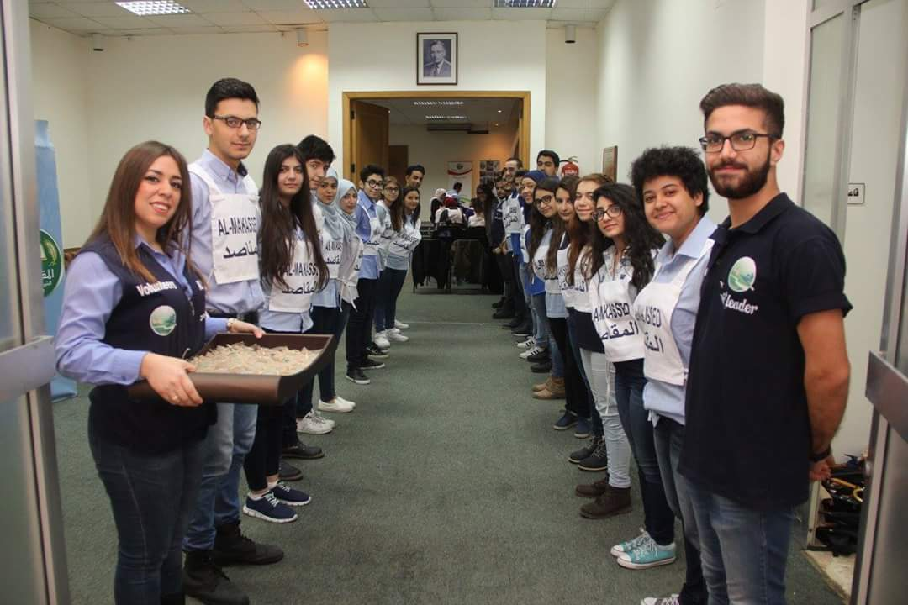
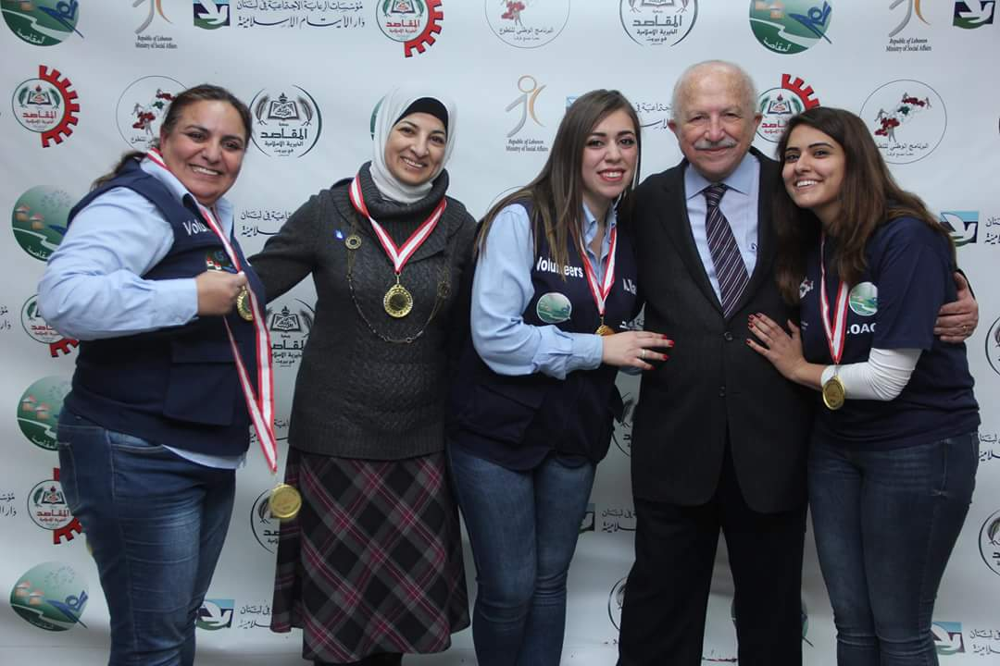

{{test}}
    <div class="row">
        <div class="col-md-12 col-xs-12">
       <div id="myCarousel" class="carousel slide" data-ride="carousel">
    <!-- Indicators -->
    <ol class="carousel-indicators">
      <li data-target="#myCarousel" data-slide-to="0" class="active"></li>
      <li data-target="#myCarousel" data-slide-to="1"></li>
      <li data-target="#myCarousel" data-slide-to="2"></li>
      <li data-target="#myCarousel" data-slide-to="3"></li>
    </ol>

    <!-- Wrapper for slides -->
    <div class="carousel-inner" role="listbox">

      <div class="item active">
        
        <div class="carousel-caption">
          <h2>تذكارات</h2>
          <p>توزيع تذكارات خلال حفل اختتام مشروع الدمج النشاطات الرياضية </p>
        </div>
      </div>

      <div class="item">
        
        <div class="carousel-caption">
          <h2>غريق الدمج</h2>
          <p> فريق الدمج لكرة القرم </p>
        </div>
      </div>
    
      <div class="item">
        
        <div class="carousel-caption">
          <h2>قادة</h2>
          <p> مجموعة من القادة</p>
        </div>
      </div>
       <div class="item">
        
        <div class="carousel-caption">
          <h2>اوسمة</h2>
          <p>مجموعة من الاوسمة المهداة للوحدة</p>
        </div>
      </div>
      <div class="item">
       
        <div class="carousel-caption">
          <h2>تطوع</h2>
          <p>مجموعة من المطوعين خلال تشريفات لاحدى احتفالات الوحدة </p>
        </div>
     </div>
      <div class="item">
        
        <div class="carousel-caption">
          <h2>صورة تكارية</h2>
          <p>صورة تذكارية مع رئيس جمعية المقاصد المهندس امين محمد الداعوق و مدير العمليات الانسة عدلا شاتيلا</p>
        </div>
      </div>
  
    </div>

    <!-- Left and right controls -->
    <a class="left carousel-control" href="#myCarousel" role="button" data-slide="prev">
      <span class="glyphicon glyphicon-chevron-left" aria-hidden="true"></span>
      <span class="sr-only">Previous</span>
    </a>
    <a class="right carousel-control" href="#myCarousel" role="button" data-slide="next">
      <span class="glyphicon glyphicon-chevron-right" aria-hidden="true"></span>
      <span class="sr-only">Next</span>
    </a>
  </div>
  <div class="row">
      <div class="col-md-11">
     <blockquote class="blockquote-reverse">
       <b class="unit">التعريف الوحدة</b><br>
         <b>
       تأسست وحدة شــؤون المتطوعين عام 2001 بمناسبة الســنة العــالمـيــة للمتطوعـين  
      وتعنى الوحدة بشؤون الطلاب وتفعيل دورهم مع محيطهم،مواكبة لسياسة الجمعية التنموية
      <br><b class="unit">أهداف الوحدة</b><br>
      تنبثق أهداف الوحدة من رسالة جمعية المقاصد الخيرية الإسلامية في بيروت التي تحث على إنماء العمل التطوعي وذلك عبر
	 تدريب المتطوع على مفاهيم و تقنيات العمل التطوعي، وعلى تحمل المسؤوليات
	 تنمية فكر وشخصية المتطوع من خلال تزويده بخبرات عملي
	 تحفيز الشباب المقاصدي على الاشتراك في تنفيذ سياسة الجمعية في حقل التنمية الاجتماعية في بيروت و المناطق الريفية.
	 نشر وتعميم فكرة التبادل و التعاون في مجالات العمل الاجتماعي بين  الشباب المقاصدي و غيرهم في الجمعيات الأهلية.
     تنمية روح الفريق عند المتطوعين و توحيد ذلك للتفاعل مع الآخرين
     تشجيع الشباب المقاصدي على تحديد واستهداف مشاكل المجتمع والتعاون على حلها 
      نشر الوعي حول مفهوم التطوع وتشجيعه لدى الشباب 
      </b>
     </blockquote>
      </div>
            </div>
        </div>
</div>
